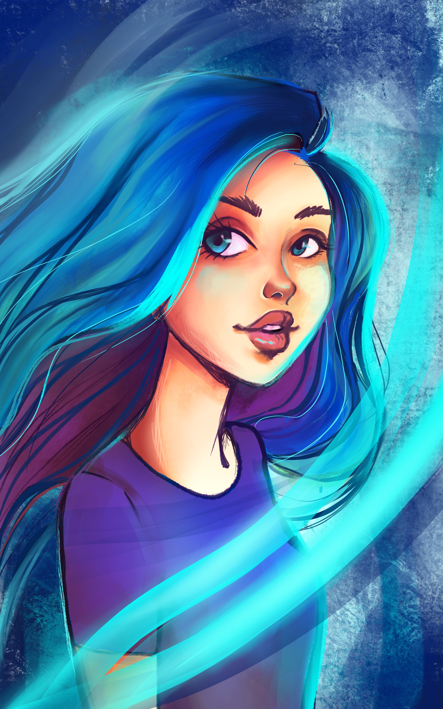
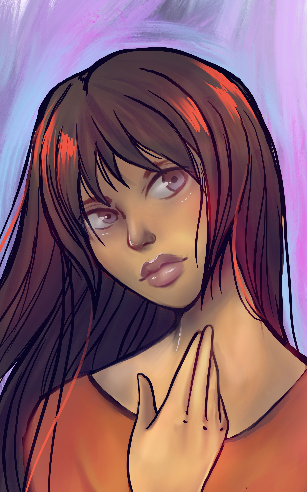

I’m a multidisciplinary designer with experience in UX design, UI design, traditional graphic design, and video production. With my background in fine arts, I strive to inject empathy and creativity in everything I design. Shortly after receiving my Bachelor of Fine Arts in painting in 2016, I dove headfirst into the world of design. Now, I can’t look back. I love designing user experiences. My empathetic nature helps me to create products that are not only designed with best practice in mind, they also satisfy the needs of the user. In my few years as a designer, I’ve worked on a wide variety of projects and always focus on designing for the users as well as my clients. I like to get involved in the full extent of the project from research to final design and marketing. I am currently working as a Video Marketer and Graphic Designer in the Greater Atlanta Area.
As a fine artist, I have always felt the need to create. In my spare time you can find me in my studio painting with watercolor, or perhaps using my iPad to create a digital sketch. I also love to cook because I love using flavor as a form of art. My most cherished passion, however, is writing, but I’m not the kind of person who likes to keep a journal. I write because I love story in any form I can find it. I use it in my UX designs as well as my personal art. I am currently developing a blog that was inspired by the idea that I can create myself as if I were a character in a book. It’s scoped to be highly designed and calculated to use style as a form of self-love.